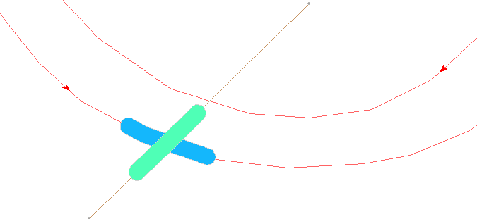
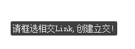

新增立交

取消
取消新增


点击“新增关系”

选择“立交”

地图操作引导：请框选立交点！
框选多条Link
相交点

地图分颜色
高亮选中link
保存/空格
生成数据


ESC
点击选中link调整立交层次


选点
选线
选关系
选Tips
增点
增线
增关系
增点
移点
删点
打断
分离点

立交
3D分歧

高速分歧
交限

车信
限速

路口

......



操作步骤
1）用户选择“新增关系”按钮，再选择二级选项中的 “立交”按钮变成浅黄色，同时地图中提示用户框选“立交点位”；
2）框选多条Link之间的交汇处；
3）系统将计算存在交汇关系的空间位置关系，随机确定上下关系，并以不同颜色高亮显示；
4）作业员根据实际情况判断Link的高低关系，左键点击Link；
5）系统将被点击的Link置上一层；
6）作业员按空格键，结束本次操作；
7）系统高亮显示交汇节点，并记录本次操作，在属性列表中把空间位置在上的Link的“高度层次”属性设置为1，在下的设置为0，以此类推，立交关系创建完毕；0层颜色:#14B7FC 1层颜色:#4FFFB6 2层颜色:#F8B19C 3层颜色:#FCD6A4
8）如果未选中link交汇处，则通过直接捕捉link上的形状点来制作特殊立交；
9）如果作业员同时选择多个交汇点，系统提示：不能有多个相交点，请重新选择！
取消操作:
10） 如果作业员想终止创建立交关系，按Esc键；
11） 如果作业员不想保存创建的立交关系，按Esc键取消；

实时控制
1、实时检查：只允许选择道路与道路、道路与铁路、铁路与铁路、道路与土地覆盖、道路与市街图、铁路与土地覆盖、市街图与土地覆盖、市街图与铁路之间的link制作立交；其中，道路与铁路、道路与土地覆盖、道路与市街图、铁路与土地覆盖、市街图与土地覆盖、市街图与铁路中，每个要素可以有多根link参与，并且属于土地覆盖、市街图中同要素的多根link必须首尾挂接，属于同一层，创建的立交点在挂接的node处；
2、实时控制：已有立交的地方，不可以再次制作立交；如果需要制作，可以先删除原始立交，然后重新制作。
3、后检查：任何link与隧道属性的RDlink创建立交后，隧道属性的RDlink的高度层次最小；
4、前检查：特殊立交只能做到道路link上；
5、前检查，制作Gsc时，如果没有选中立交的要素，不允许提交
业务原则:
1）“处理标识”字段默认为“人工赋值”；
2）“起终点标识”：程序自动维护，如果立交点为是LINK的起点，则此字段为起点，如果立交点为是LINK的终点，则此字段为终点，如果立交点既不是LINK的起点，也不是LINK的终点，则此字段为形状点；
3）自交线允许创建立交关系；
4）多条Link建立立交关系时，左键点击其中一条Link，系统会将该Link与其上面的Link位置互换，如个该Link在最上层，则与其下面的Link位置互换；
5） 可以相互间创建立交关系的要素有：道路与道路、道路与铁路、道路与土地覆盖、道路与市街图、铁路与土地覆盖、铁路与铁路、市街图与土地覆盖、市街图与铁路；其中，道路与铁路、道路与土地覆盖、道路与市街图、铁路与土地覆盖、市街图与土地覆盖、市街图与铁路中，每个要素可以有多根link参与，并且属于土地覆盖、市街图同要素的多根link必须首尾挂接，属于同一层，创建的立交点在挂接的node处；
6）创建立交后，在每条Link的交汇处插入一个形状点；
7）创建立交，立交属性中“处理标识”默认值为“人工赋值”；
8）特殊立交的制作场景：单独选中一根link，捕捉link上的一个形状点制作立交，高度层次默认为0；
9）处理标识：如果制作了特殊立交，则程序自动赋值为“特殊处理”；否则默认为“人工赋值”；
地图高亮组成Link
属性栏展示属性